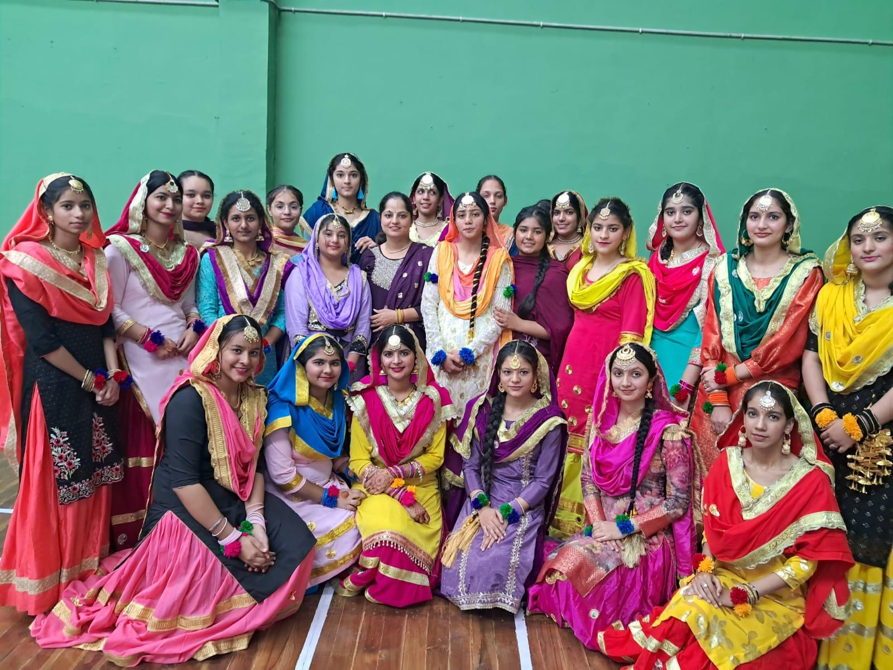
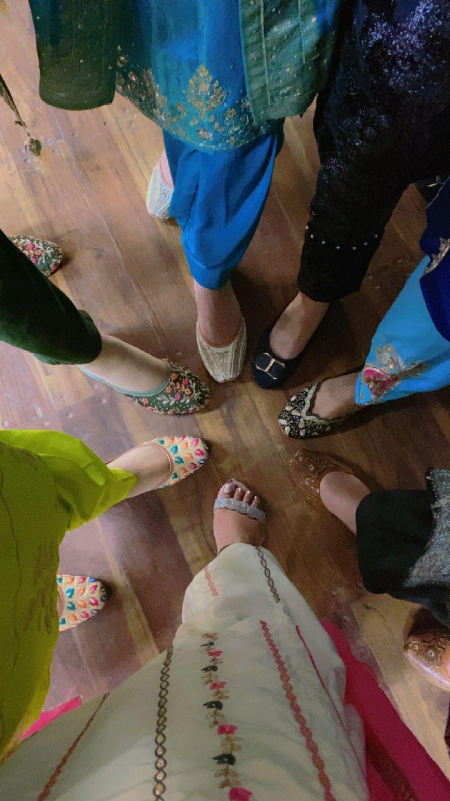
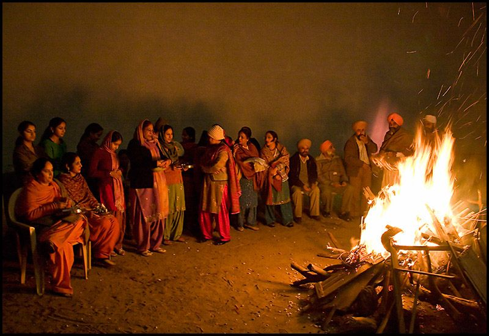
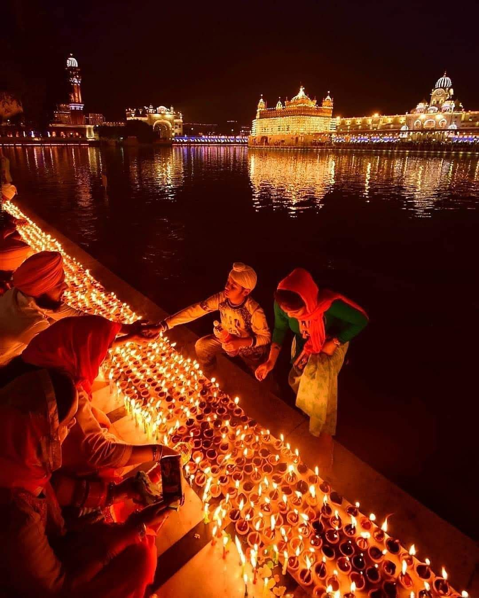

Punjab
Punjab is where I'm from. The name comes from Persian, "panj" meaning five and "aab" meaning water, so it translates to "land of five rivers," named after the rivers that run through the region.
It's home to people from different religions and backgrounds living alongside each other, and there's a strong culture of hospitality and selfless service there, showing up for people, feeding people, helping without expecting anything back.
This page is where I share more about my Punjabi background. The photos on either side are personal to me, framing this introduction with a bit of dance and traditional style.

Dance
Punjab has a few traditional dance forms, most known are Bhangra, typically performed by men, and Giddha, usually performed by women. Both are tied to harvest celebrations and big occasions like weddings, full of energy, clapping, and rhythm.
I've specifically done Giddha, staying part of a group all the way through school, up until my last year.
Food
Punjabi food is hearty and rich, a lot of it built around wheat, dairy, and generous amounts of ghee and butter. Classic dishes include sarson da saag (a mustard greens curry) with makki di roti (cornmeal flatbread), rajma (kidney bean curry), chole (chickpea curry), and dal makhani. A lot of cooking is done in a tandoor, a clay oven, which is where tandoori dishes and naan get their flavor. Lassi, a yogurt-based drink, is a common way to cool down after a spicy meal.
Music
Punjabi music covers a lot of ground, folk music tied to harvests and weddings, bhangra beats that turned into a whole genre of their own, and more modern Punjabi pop and hip hop that's popular now.
Music has always been close to us. Even Gurbani is structured around raags, specific musical measures that shape how each hymn is sung. Songs carry us through everything, happy occasions, weddings, and also grief.
Traditional Clothes
Punjabi clothes are known for being colorful, with jewelry that's part of the look too.
Turbans, or dastars, are a well known part of Sikh identity, worn by both men and women, and they come in a wide range of colors.
Langar
The Golden Temple in Amritsar, shown at the top of this page, runs one of the largest free community kitchens in the world, called a langar, serving free meals to anyone who visits, regardless of religion, caste, or background. It's one of the clearest examples of seva, or selfless service, that's core to Sikh values.
Sports & Games
Punjab has a strong sports culture. Kabaddi is one of the most well known, a tag-and-wrestle team sport that's especially popular in rural Punjab, along with Kho Kho, another fast-paced tag-based game. Punjabis are generally known for being into sports in general, not just these two.
There's also Gatka, a Sikh martial art that uses sticks or swords, often performed at Sikh gatherings and festivals as both a display of skill and a tribute to Sikh history.
Some Festivals of Punjab
Lohri

Lohri is a winter festival built around a bonfire, marking the end of the coldest part of winter and the start of the harvest season. Families gather around the fire at night, throw sesame seeds, popcorn, and sugarcane into the flames, and sing traditional folk songs. It's especially significant for families celebrating a new baby or a recent wedding.
Photo by Gursimrat Ganda on Unsplash
Diwali

Diwali is the festival of lights, celebrated by lighting diyas, decorating homes with rangoli, and marking the victory of light over darkness and good over evil. Sikhs also celebrate it as Bandi Chhor Divas, marking Guru Hargobind Ji's release from imprisonment.
Photo by Janardan Mahto on Unsplash
Vaisakhi

Marks the founding of the Khalsa in 1699. It's also a harvest festival, since it falls right around when the wheat crop is ready. Celebrated with parades, prayers, and community gatherings.
Photo by Sandeep Gill on Unsplash